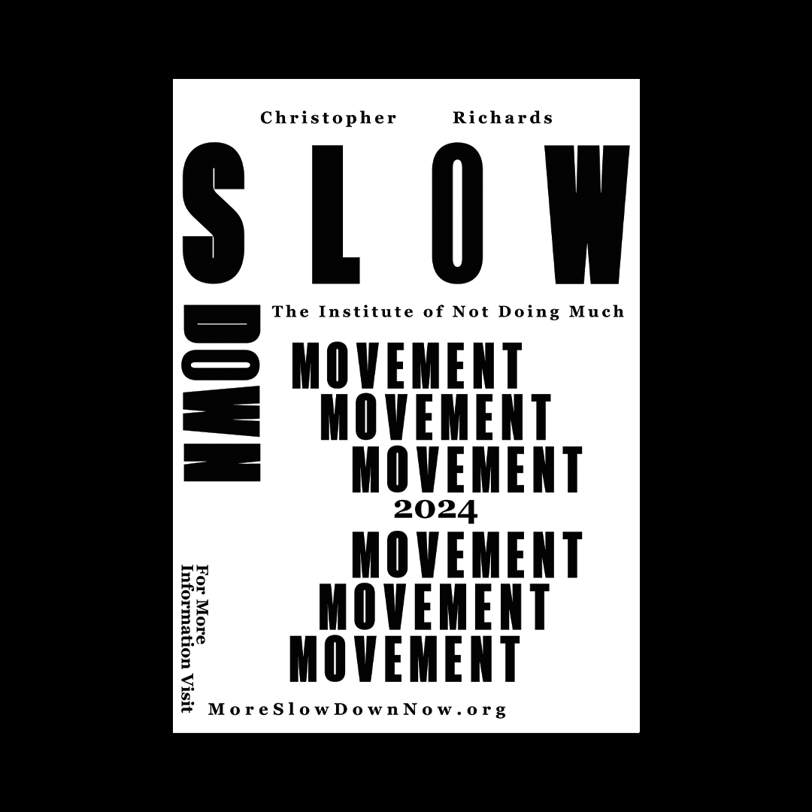
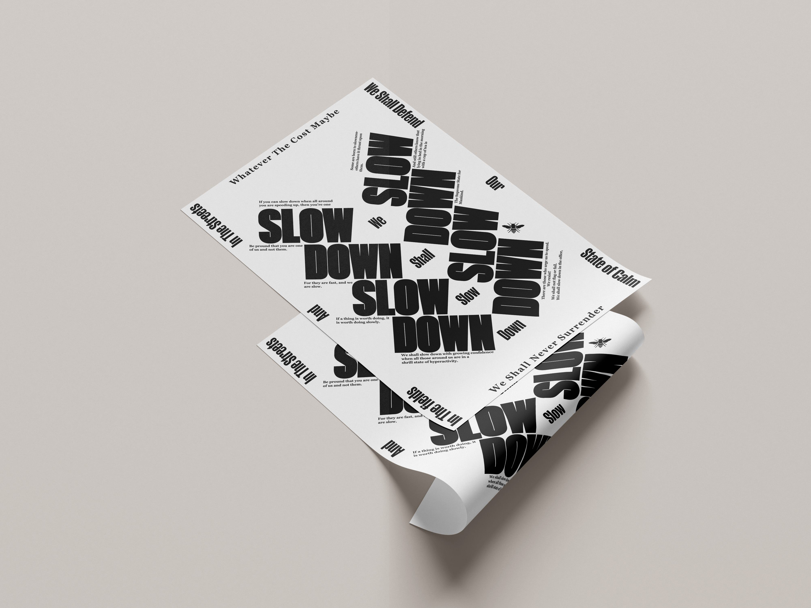
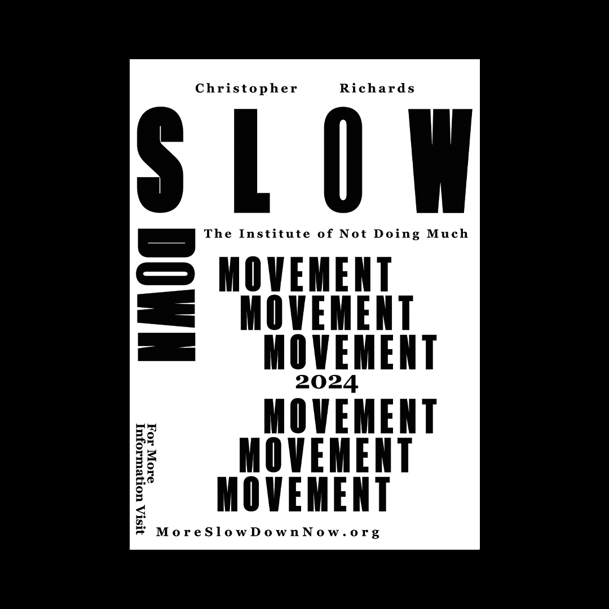
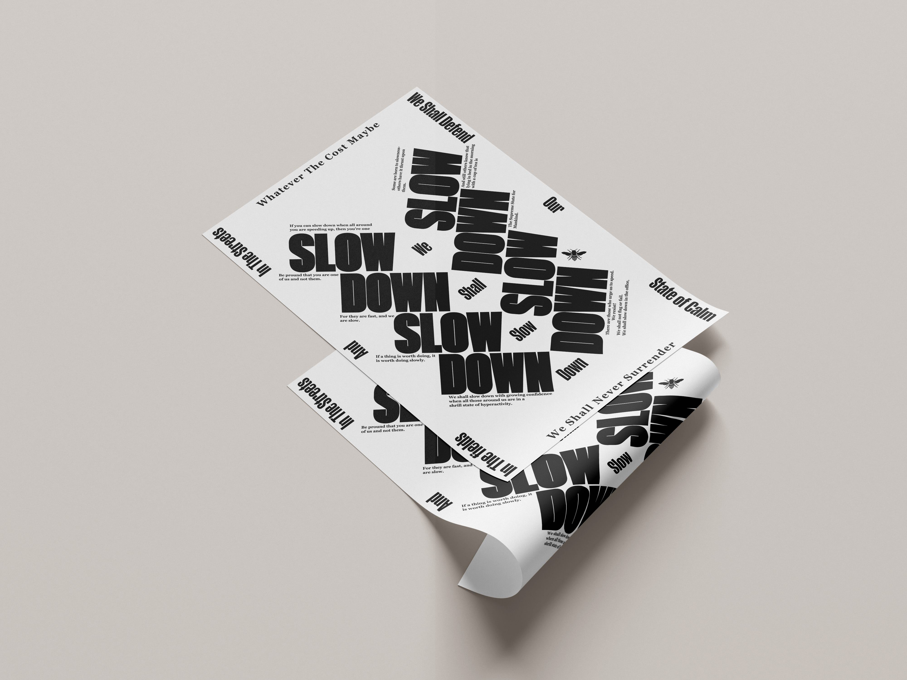

[About]
The Slow Down Movement, founded by Christopher Richards, is a transformative movement dedicated to encouraging individuals to embrace moments of calm and reflection as a vital part of their daily lives. In today’s fast-paced, digitally driven world, this movement seeks to remind people of the importance of slowing down, reconnecting with their inner selves, and fostering mental clarity and emotional well-being.
 


